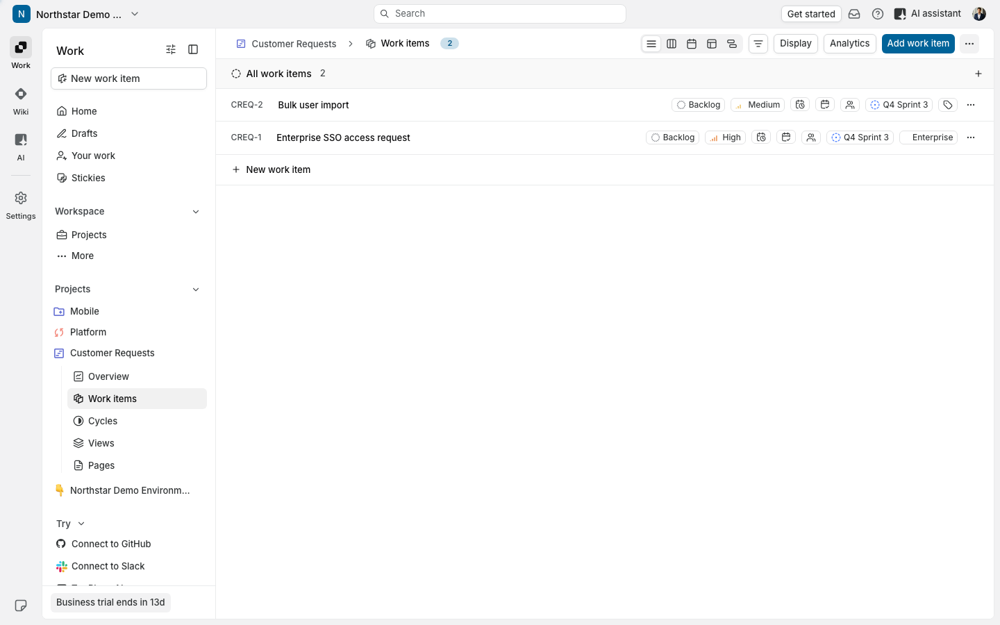
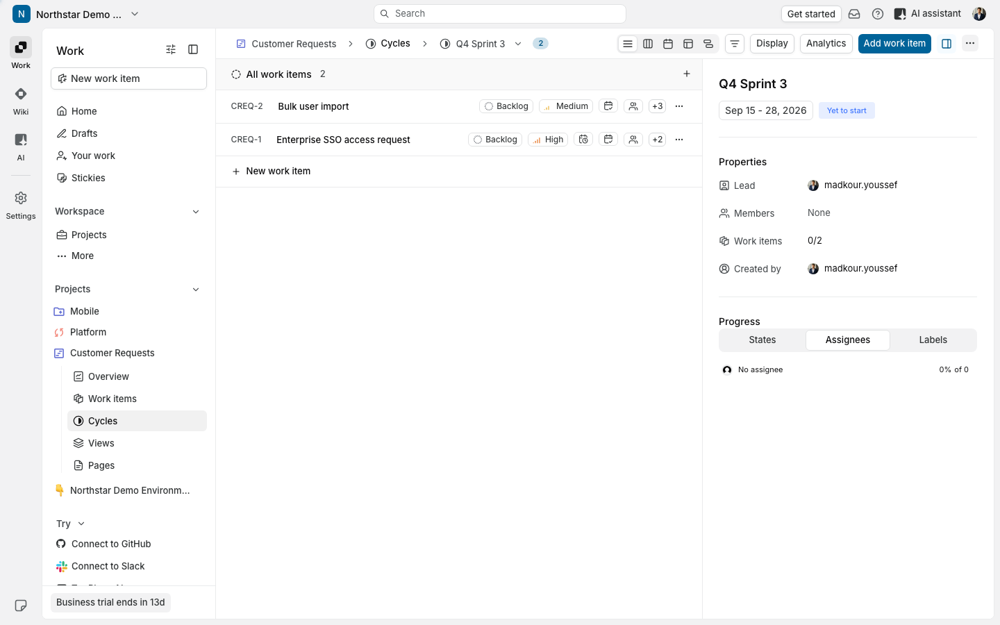
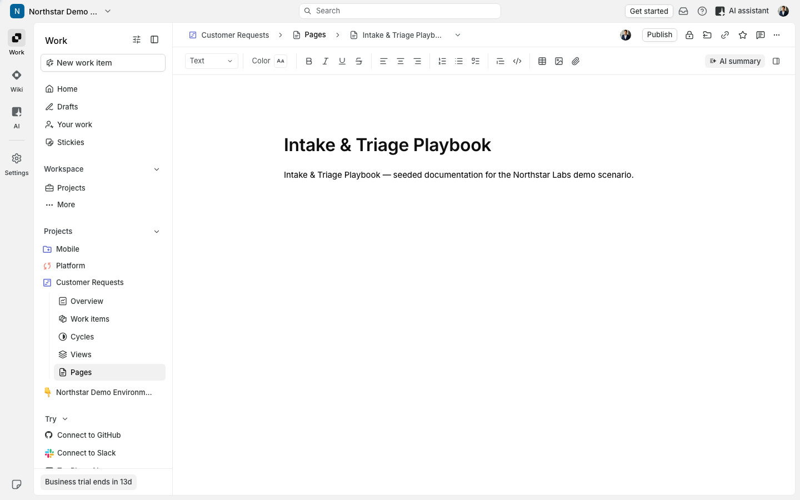

Northstar Labs mentioned that
incoming engineering requests
are difficult to prioritize.
Step 1 / 3
Capture and triage incoming work
Northstar mentioned that incoming engineering requests are hard to triage. Here is how a request gets captured and triaged in one place.

Step 2 / 3
Plan approved work in the next cycle
Once triaged, approved work moves directly into the next cycle - no re-typing the request into another system.

Step 3 / 3
Keep product context connected
The documentation an engineer needs stays linked to the work itself, instead of living in a separate system.

Looking forward to the technical walkthrough with
Maya
this week.
FLOWBOARD
·
Solutions Engineering